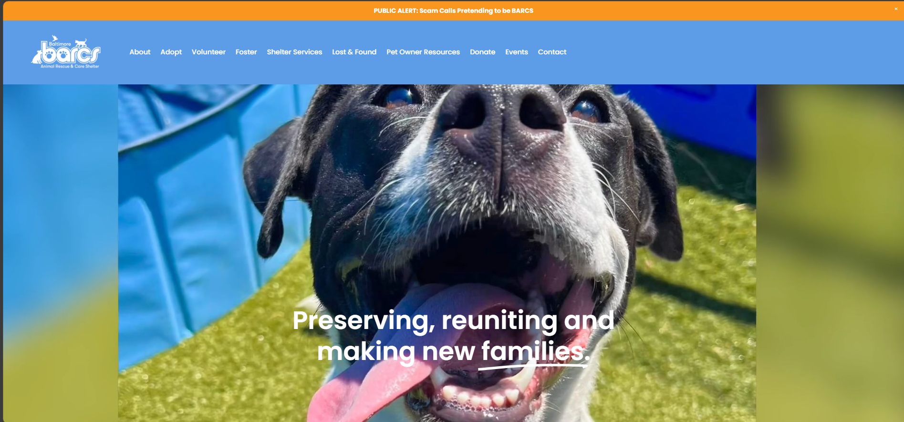

Evaluating Barcs.org
What is the URL of the website?
https://www.barcs.org/
What is the name of the website?
Barcs
Who is the site's target audience?
People interested in adopting and supporting shelter animals
How is the site organized?
The front page provides facts about homeless animals, options to make a donation, a navigation bar at the top of the page, a slidshow showing pivtures with animals, and more!
Which CRAP Design Principle does this use? Provide one example.
The Contrast Principle is the most noticable as every topic stands out in its own way whether its the background color or border design for each section
What is the Audit score according to the Accessibility Checker?
The audit score was unfortunately a 65%
What is the site's effectiveness? Does it support users in completing actions accurately?
While the site is very busy and full of all types of options and information, I feel like its very thorough with explaining where you are and where you need to be
What is the site's efficiency? Can users perform tasks quickly?
Because there a more navigational options, it takes less steps to get to where you need to and each page has a clear description
How is the engagement? Is it pleasant to use and appropriate for
I believe the site is colorful, giving a warm happy feeling. The slideshow showing the pets and the amount of facts on the page are certainly important for the topic of animal adoption
Recommendations for Improving this Website
While the facts are important to know, I feel like they aren't as necessary when users are more likely already there to adopt or support and don't need convincing.
While I understand its important to thank sponsers and supporters, having all of their logos on the front page seems a little unecessary.